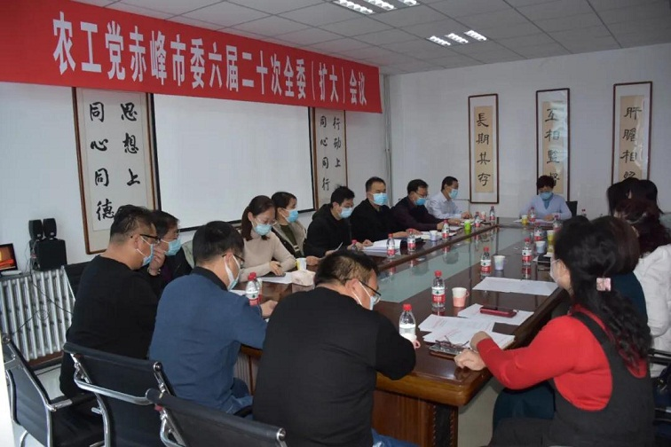
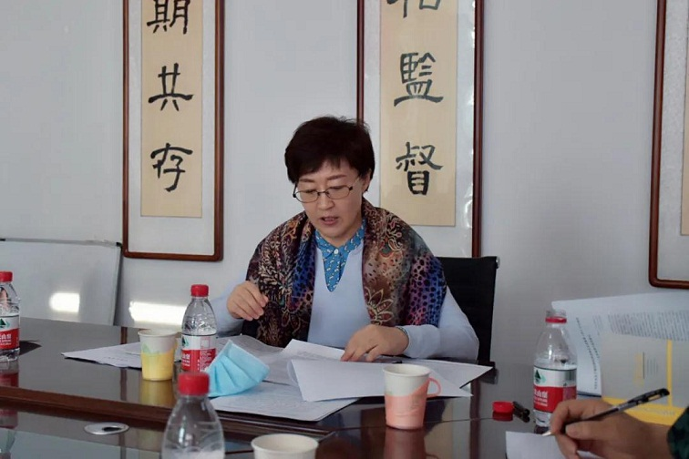

12月20日，农工党赤峰市委主委、市政府副市长李艳茹主持召开农工党赤峰市委六届二十次全委（扩大）会议，市委委员及部委负责人参加。

会议原文传达学习了《中共中央关于制定国民经济和社会发展第十四个五年规划和二〇三五年远景目标建议》，学习中国农工民主党第十六届四中全会及中共中央党外人士座谈会会议精神，研究讨论“口述党史”视频内容，通报2020年度社情民意信息报送及采用情况，研究发展新党员及商讨年末开会事宜。

会议要求，农工党市委各级党组织和全体党员要把学习贯彻中共十九届五中全会精神作为当前和今后一个段时期的重要政治任务，围绕全会确定的二〇三五年远景目标和“十四五”时期经济社会发展的目标任务以及赤峰“十四五”规划编制积极建言献策、献计出力。要贯彻落实好中国农工民主党十六届四中全会会议精神，要切实增强贯彻落实的思想自觉、政治自觉、行动自觉，把思想和认识统一到中共中央对国内外形势的分析判断上来，把学习贯彻的成效转化为统一思想凝聚共识的具体举措，把学习贯彻的成效转化为干事创业的生动实践。全体党员要更加提高政治站位，坚持中国共产党的领导，凝心聚力、锐意进取，不断加强自身建设，全面提升履职服务水平，在疫情防控、生态建设、经济社会发展等方面继续发挥界别优势画好“同心圆”。